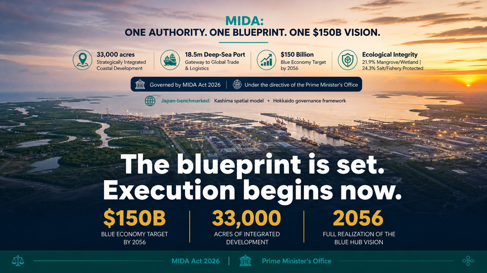
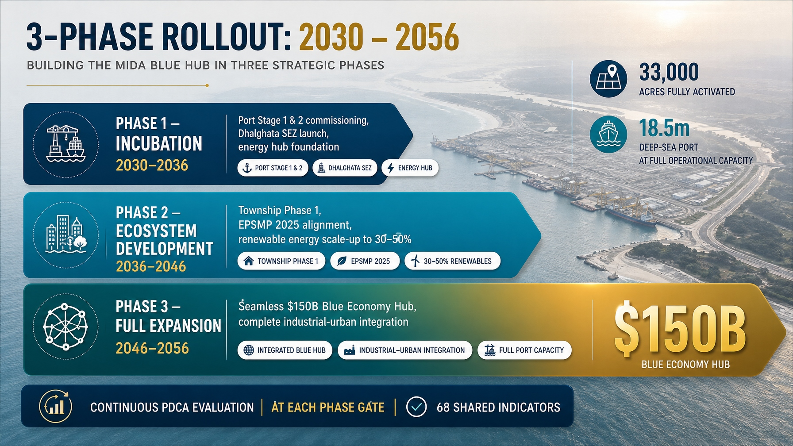

Economic Pillars
The 4 Interconnected Strategic Hubs
A self-sustaining coastal ecosystem where port infrastructure enables global trade, energy fuels industry, manufacturing creates high-value jobs, and marine fisheries preserve coastal wealth.
Gateway to Global Trade
Deepest Ocean Terminal for Bangladesh & Beyond
With an 18.5m MSL draft and 14.3 km navigational channel, Matarbari eliminates feeder vessel dependency. Directly berthing 8,000 TEU container mother vessels 24/7 without tidal waiting windows, it cuts export turnaround from 45 to 23 days.
18.5m
Channel Depth (MSL)
8,000 TEU
Direct Vessel Capacity
40–45%
National Container Volume
$4.0 Billion
Annual Logistics Savings
View Port Phase 1 & 2 Details →

Port Infrastructure Highlights
Includes container terminal, multi-purpose terminal, 27 km Port Access Road with 14 bridges, Chakaria Intermodal Yard (IMY), and proposed AIS Singapore commercial ship drydock ($1.0B FDI).
National Energy Spine
Powering 10.6 GW & 42 MTPA Energy Base
Transitioning Bangladesh into a clean energy era. The hub anchors the operational 1,200 MW USC Coal Plant, SPM double pipeline system, two operational 500 MMCFD FSRUs, upcoming 3rd FSRU (600 MMCFD), utility-scale solar (950 MW), coastal wind (42 MW), and Small Modular Reactors (SMR: 300–500 MW).
6,560 MW
Target Generation (2050)
1,000 MMCFD
Land-Based LNG Plant
9 MTPA
SPM Oil Evacuation
Tk 800 Cr/yr
SPM Sovereign Savings
Explore Energy Projects →
SPM System Active
Unloading crude oil in 3 days instead of 9 days, directly to Eastern Refinery Ltd.
Clean Transition Policy
Greenfield coal units 5–8 formally cancelled, saving 1,594 acres for utility solar, multimodal logistics, and green hydrogen bunkering.
Industrial Powerhouse
8,500 Acres Dedicated to High-Value Industry
Moving from raw extraction to high-margin downstream production. Dhalghata SEZ (SEZ-5 & SEZ-3) hosts major petrochemical, green steel, and specialized manufacturing complexes with high-capacity industrial power, desalination utilities, and direct deep-sea quay connections.
770 Acres
Allocated in SEZ-5
510 Acres
TK Group (Samuda Chemical)
200,000 BPD
Planned Refinery Complex
300+
Japanese JETRO Pipeline
Apply for Industrial Land (OSS) →

Target Industrial Clusters
Petrochemical refining, electric arc furnace steel (BSRM), Gree air conditioning assembly, pharmaceutical formulations, and marine biotechnology.
Blue Economy Preservation
Sustainable Offshore Harvest & Global Seafood Brand
Transforming traditional subsistence fishing into an export-oriented blue economy. Combining modern deep-sea harvesting fleets with terrestrial Recirculating Aquaculture Systems (RAS) and temperature-controlled cold chains.
$500M
Agile Resources (RAS PPP)
12 Vessels
Modern Deep-Sea Trawlers
50 Acres
Marine Aquaculture Park
Tk 6,145 Cr
National Seafood Export Base
See Fishing Livelihood Care →
Marine Sanctuary Protection
Statutory mandate to protect local shrimp culture, coastal marine fish nursery zones, and paan boroj.
Global Certification & Traceability
Building international HACCP-compliant testing laboratories and cryogenic cold storage directly at the port quay for premium global exports.